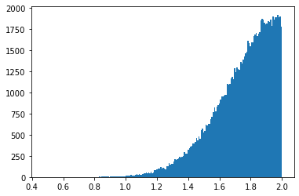
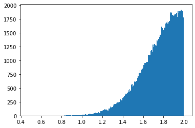

k = gaussian([2, 0.1], size = int(1e5), bound = [0, 2])
plt.hist(k, bins = 200);
pert (params:list, size:int=1, lamb=4)
Samples from a Pert distribution of given parameters
| Type | Default | Details | |
|---|---|---|---|
| params | list | Pert parameters a, b, c | |
| size | int | 1 | number of samples to get |
| lamb | int | 4 | lambda pert parameters |
| Returns | array | samples from the given Pert distribution |
gaussian (params:list|int, size=1, bound=None)
Samples from a Gaussian distribution of given parameters.
| Type | Default | Details | |
|---|---|---|---|
| params | list | int | If list, mu and sigma of the gaussian. If int, we consider sigma = 0 | |
| size | int | 1 | Number of samples to get. |
| bound | NoneType | None | Bound of the Gaussian, if any. |
| Returns | array | Samples from the given Gaussian distribution |
k = gaussian([2, 0.1], size = int(1e5), bound = [0, 2])
plt.hist(k, bins = 200);
bm1D (T:int, D:float, deltaT=False)
Creates a 1D Brownian motion trajectory
| Type | Default | Details | |
|---|---|---|---|
| T | int | Length of the trajecgory | |
| D | float | Diffusion coefficient | |
| deltaT | bool | False | Sampling time |
| Returns | array | Brownian motion trajectory |
regularize (positions:<built-infunctionarray>, times:<built- infunctionarray>, T:int)
Regularizes a trajectory with irregular sampling times.
| Type | Details | |
|---|---|---|
| positions | array | Positions of the trajectory to regularize |
| times | array | Times at which previous positions were recorded |
| T | int | Length of the output trajectory |
| Returns | array | Regularized trajectory. |
sample_sphere (N:int, R:int|list)
Samples random number that lay in the surface of a 3D sphere centered in zero and with radius R.
| Type | Details | |
|---|---|---|
| N | int | Number of points to generate. |
| R | int | list | Radius of the sphere. If int, all points have the same radius, if numpy.array, each number has different radius. |
| Returns | array | Sampled numbers |
normalize (trajs)
Normalizes trajectories by substracting average and dividing by SQRT of their standard deviation.
| Type | Details | |
|---|---|---|
| trajs | np.array | Array of length N x T or just T containing the ensemble or single trajectory to normalize. |
normalize_fGN (disp, alpha, D, T:int, deltaT:int=1)
Normalizes fractional Gaussian Noise created with stochastic library.
| Type | Default | Details | |
|---|---|---|---|
| disp | Array-like of shape N x T or just T containing the displacements to normalize. | ||
| alpha | float in [0,2] or array-like of length N x 1 | Anomalous exponent | |
| D | float or array-like of shape N x 1 | Diffusion coefficient | |
| T | int | Number of timesteps the displacements were generated with | |
| deltaT | int | 1 | Sampling time |
| Returns | Array-like containing T displacements of given parameters |
import numpy as npN = 10; T = 10
trajs = 3*np.random.randn(N*T*2).reshape(N,T,2)
trajs = np.cumsum(trajs, axis = 1)
norm_trajs = normalize(trajs)
idx = 0; plt.figure(figsize = (3,3))
plt.plot(trajs[idx,:,0]-trajs[idx,0,0], '-o', label = 'Original trajectory')
plt.plot(norm_trajs[idx,:,0], '-o', label = 'Normalized')
plt.legend(); plt.xlabel('Time'); plt.ylabel('Position')Text(0, 0.5, 'Position')
Needed for the correct calculation of confined diffusion in circular compartments.
trigo ()
This class gathers multiple useful trigonometric relations.
Inspired from: https://stackoverflow.com/questions/30844482/what-is-most-efficient-way-to-find-the-intersection-of-a-line-and-a-circle-in-py and http://mathworld.wolfram.com/Circle-LineIntersection.html
circle_line_segment_intersection (circle_center, circle_radius, pt1, pt2, full_line=False, tangent_tol=1e-09)
Find the points at which a circle intersects a line-segment. This can happen at 0, 1, or 2 points.
| Type | Default | Details | |
|---|---|---|---|
| circle_center | tuple | The (x, y) location of the circle center | |
| circle_radius | float | The radius of the circle | |
| pt1 | tuple | The (x, y) location of the first point of the segment | |
| pt2 | tuple | The (x, y) location of the second point of the segment | |
| full_line | bool | False | True to find intersections along full line - not just in the segment. False will just return intersections within the segment. |
| tangent_tol | float | 1e-09 | Numerical tolerance at which we decide the intersections are close enough to consider it a tangent |
| Returns | Sequence[Tuple[float, float]] | A list of length 0, 1, or 2, where each element is a point at which the circle intercepts a line segment. |
find_nan_segments (a, cutoff_length)
Extract all segments of nans bigger than the set cutoff_length. If no segments are found, returns None. For each segments, returns the begining and end index of it.
Output: array of size (number of segments) x 2.
segs_inside_fov (traj, fov_origin, fov_length, cutoff_length)
Given a trajectory, finds the segments inside the field of view (FOV).
| Type | Details | |
|---|---|---|
| traj | array | Set of trajectories of size N x T (N: number trajectories, T: length). |
| fov_origin | tuple | Bottom right point of the square defining the FOV. |
| fov_length | float | Size of the box defining the FOV. |
| cutoff_length | float | Minimum length of a trajectory inside the FOV to be considered in the output dataset. |
| Returns | array | Set of segments inside the FOV. |
inside_fov_dataset (trajs, labels, fov_origin, fov_length, cutoff_length=10, func_labels=None, return_frames=False)
Given a dataset of trajectories with labels and a FOV parameters, returns a list of trajectories with the corresponding labels inside the FOV
| Type | Default | Details | |
|---|---|---|---|
| trajs | array | Set of trajectories with shape T x N x 2. | |
| labels | array | Set of labels with shape T x N x 2. | |
| fov_origin | tuple | Bottom left point of the square defining the FOV. | |
| fov_length | float | Size of the box defining the FOV. | |
| cutoff_length | int | 10 | Minimum length of a trajectory inside the FOV to be considered in the output dataset. |
| func_labels | NoneType | None | (optional) Function to be applied to the labels to take advantage of the loop. |
| return_frames | bool | False | |
| Returns | tuple | - trajs_fov (list): list 2D arrays containing the trajectories inside the field of view. - labels_fov (list): corresponding labels of the trajectories. |
L = 200; T = 100
Ns = [20,10,10]
alphas = [1,1.5]
D = 1
trajs, labels = models_phenom().multi_state(N = 500, L = L, T = 50)
fov_origin = [50,50]; fov_length = L*0.1
trajs_fov, labels_fov = inside_fov_dataset(trajs, labels, fov_origin, fov_length)fig, (ax, ax2) = plt.subplots(1, 2, figsize = (14,7))
colors = plt.cm.RdYlGn(np.linspace(0, 1, len(trajs_fov)))
for idx, og_traj in enumerate(trajs[:, :, :].transpose(1,0,2)):
ax.plot(og_traj[:, 0], og_traj[:, 1], c = 'k', alpha = 0.5, lw = 0.8)
for t, c in zip(trajs_fov, colors[::-1, :]):
ax.plot(t[0], t[1], c= c)
ax2.scatter(t[0], t[1], facecolor = c, s = 1)
# FOV
fov_min_x, fov_min_y = fov_origin
fov_max_x, fov_max_y = np.array(fov_origin)+fov_length
# currentAxis = ax.gca()
ax.add_patch(Rectangle((fov_min_x, fov_min_y), fov_length, fov_length, fill=None, alpha=1, lw = 2, label = 'FOV'))
# Boundary
ax.axhline(0, alpha = 0.5, ls = '--', c = 'k', label = 'boundary')
ax.axhline(L, alpha = 0.5, ls = '--', c = 'k')
ax.axvline(0, alpha = 0.5, ls = '--', c = 'k')
ax.axvline(L, alpha = 0.5, ls = '--', c = 'k')
# FOV origin
ax.scatter(fov_origin[0], fov_origin[1], label = 'FOV origin', s = 40, zorder = 10)
legend = ax.legend()
legend.get_frame().set_alpha(None)
plt.setp(ax, xlabel = 'X (px)', ylabel = 'Y (px)')
plt.setp(ax2, xlim = (0,L), ylim = (0,L));
plot_trajs (trajs, L, N, num_to_plot=3, labels=None, plot_labels=False, traps_positions=None, comp_center=None, r_cercle=None)
T = 50; N = 50; L = 1.2*128; D = 0.1
trajs_model1, labels = models_phenom().single_state(N = N,
L = L,
T = T,
Ds = D,
alphas = 0.5
)plot_trajs(trajs_model1, L, N)